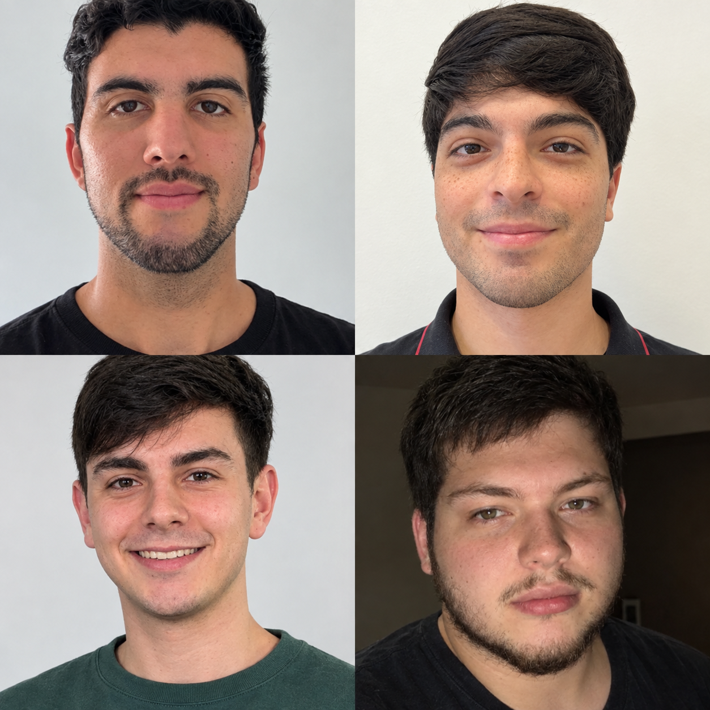
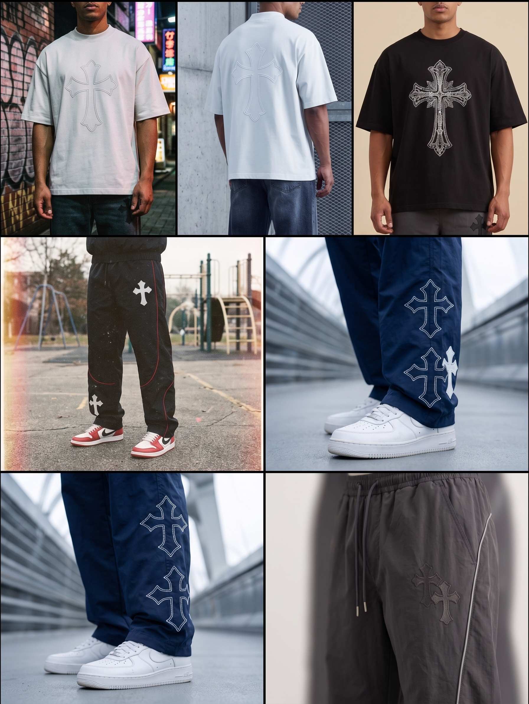

Empezamos este proyecto de LaRoperia con la idea de llevar la mejor moda urbana a todos lados. Nos enfocamos en conseguir prendas de alta calidad, que sean cómodas, livianas y sobre todo con mucho estilo. Creemos que vestirse bien no tiene por qué ser aburrido ni incómodo.
Lo que comenzó como un simple boceto entre clases y líneas de código en los pasillos de la Facultad rápidamente cobró vida. Nos dimos cuenta de que el desarrollo de software y la moda callejera comparten la misma esencia: la necesidad de innovar, romper los moldes tradicionales y expresarse con libertad.
Hoy, combinamos nuestro aprendizaje técnico con nuestra visión estética para crear no solo ropa, sino una plataforma digital impecable. Nuestro objetivo es que la experiencia de usuario en nuestra tienda sea tan cómoda y moderna como las prendas que diseñamos. ¡De Rosario para el mundo, fusionando código y estilo en un solo lugar!

Somos estudiantes de la Tecnicatura en Programación. Desarrollamos este proyecto trabajando en equipo para llevar nuestras ideas al código.
Integrantes:
Nuestro trabajo consiste en el desarrollo funcional y visual de un carrito de compras para un e-commerce.
Para lograrlo, aplicamos las herramientas y conceptos vistos en la cursada:
